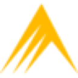
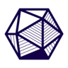

ResearchShanghai, Jul 2025
Young Researcher Award
Presented my carbon-emission paper at the 41st RSEP International Multidisciplinary Conference. The only high-school or undergraduate participant among 60+ researchers. See the program
PublicationNov 2025
Paper in IJHSR
“Deriving Transportational Carbon Emission Reduction Strategy Efficiency with an Empirical Model.” First author. EV versus transit carbon-abatement returns across 50 cities. Vol. 7, issue 11. Read the paper · SSRN
WritingTop 0.5%
John Locke Essay Competition
Top 0.5% of submissions (200 of 33,000).
AI1st of 45 teams
Stanford AI hackathon
Division winner. Built Antibody, AI decision gates that check AI-drafted legal memos and approve, hold or block them. See the code
BusinessFinalist, 2026

Crowe National Case Competition
Top 8 of 170+ teams.
Debate2x

NPDL Tournament of Champions
Qualified twice. Top 2% of 600+ teams.
Math2x

AIME qualifier
Qualified in 2023 and 2024.